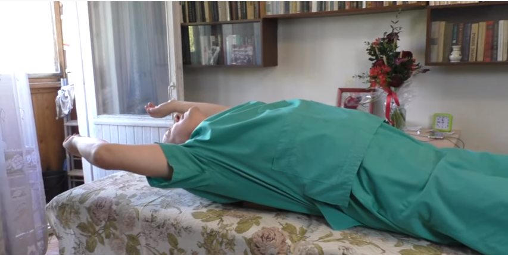

Исправить осанку (НАВСЕГДА)
Осанка: двигательный контроль (легкое напряжение в животе = привычка, вытянутая макушка = привычка ) + растяжка грудного отдела позвоночника 3-5-15 мин. в день
шаг 2: меньше сиди, 7:16
Осанка Божьев